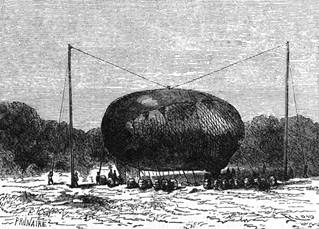

Příjezd do Zanzibaru. – Anglický konsul. – Nekalé smýšlení obyvatelstva. – Ostrov Kumbeni. – Dešťaři. – Nadmutí balonu. – Odjezd dne 18. dubna. – Poslední „s Bohem“. – Viktorie.
Vítr neustále příznivý urychlil postup Resolutu k cíli jeho cesty. Jízda průlivem Mozambickým byla zvláště pokojna. Plavba po moři byla dobrým předvěstným znamením plavby vzduchem. Kde kdo si oddechl, když se cesta schýlila ke konci, a hleděl býti nápomocen doktoru Fergussonovi v posledních přípravách.
Konečně octl se koráb v úzoru města Zanzibara, ležícího na ostrově téhož jména, a dne 15. dubna v jedenáct hodin dopoledne spustil kotvu v přístavě.
Ostrov Zanzibar náleží imamu Maskatskému, spojenci Francie a Anglie, a jest zajisté nejkrásnější jeho osadou. Do jeho přístavu vjíždí velký počet lodí ze sousedních krajin.
Ostrov jest odloučen od pobřeží afrického toliko průlivem, jehož největší šířka nepřevyšuje čtyřicetosm kilometrů.
Provozuje čilý obchod s klím, slonovinou a předkem s ebenem, neboť Zanzibar jest velkým tržištěm na otroky. Tu se soustřeďuje všecka ta kořisť dobytá v bitvách, které vnitrozemští náčelníci neustále mezi sebou svádějí. Tento obchod jest rozšířen po celém východním pomoří až do šířek Nilu, a pan G. Lejean viděl jej bez ostychu vésti pod francouzskou vlajkou.
Jakmile Resolute přistal, přišel anglický konsul v Zanzibaru na loď propůjčit se k službám doktorovi, o jehož záměrech dovídal se již celý měsíc pravidelně z evropských časopisů. Leč až dotud stál v četném šiku nevěřících.
„Pochyboval jsem,“ pravil, podávaje ruku Samuelu Fergussonovi, „ale teď už nepochybuji.“
Nabídl vlastní dům doktorovi, Dicku Kennedyovi, a jak se rozumí samo sebou, i hodnému Joovi.
Jeho laskavostí mohl si doktor přečísti rozličné listy, jež byl dostal od setníka Spekea. Setníkovi a jeho soudruhům bylo hrozně strádati hladem a nepohodou, nežli dospěli do země Ugoga; postupovali toliko s největší námahou a neměli již ani pomyšlení, aby dávali o sobě rychlé zprávy.
„To jsou nebezpečenstva a újmy, jichž se dovedeme vystříci,“ pravil doktor.
Zavazadla tří cestujících dopravena do domu konsulova. Hodlali složiti balon na břehu zanzibarském; byloť tam u návěstného stožáru příhodné prostranství při ohromné budově, která by ho byla chránila proti východním větrům. Tato ohromná bašta, podobná sudu na dno postavenému, proti němuž sud heidelberský byl by pouhým soudkem, sloužila za tvrz, a na její plošině stáli na stráži Beludžové ozbrojení kopími, jakási to lenošivá a hulákavá posádka.

Vodík vnikal vpustnými rourami do balonů.
Ale když měla vzducholoď býti složena, dostalo se konsulovi zprávy, že se tomu ostrované oprou násilím. Nic není slepějšího nad zfanatisované náruživosti. Zvěst o příjezdu křesťana, jenž obmýšlel vznésti se do vzduchu, přijata s rozhořčením; černoši, rozčilenější než Arabové, spatřovali v tomto úmyslu nepřátelské záměry proti svému náboženství; domnívali se, že se strojí úklad slunci nebo měsíci. Jsouť tato dvě tělesa nebeská africkým národům předmětem bohocty. Pročež uzrálo rozhodnutí opříti se této rouhavé výpravě.
Konsul zpravený o tomto smýšlení, rokoval s doktorem Fergussonem a velitelem Pennetem. Tento nechtěl ustoupiti hrozbám, avšak jeho přítel přesvědčil ho v té věci o jiném.
„Na konec bychom zajisté provedli svou,“ pravil k němu, „i vojáci imamovi přispěli by nám v čas potřeby brannou rukou; leč nehoda je rychle hotova, milý veliteli; neblahý výstřel stačil by uvaliti na balon nenapravitelnou pohromu, a cesta byla by neodvratně zmařena; pročež třeba jednati s největší obezřelostí.“
„Ale co počít? Složíme-li balon na pobřeží africkém, narazíme na tytéž potíže! Co počít?“
„Nic není jednoduššího,“ odpověděl konsul. „Vizte ty ostrovy vyvstávající za přístavem; složte vzducholoď na některém z nich, obkličte se kruhem plavcův a nevydáte se v nižádné nebezpečí.“
„Tak jest,“ přisvědčil doktor, „a budeme moci zcela nerušeně dokonat své přípravy.“
Velitel podrobil se této radě. Resolute zajel k ostrovu Kumbeni. Z rána dne 16. dubna složen ballon bezpečně prostřed mýtiny mezi velkými lesy, jimiž je půda hustě zarostlá.
Vztyčeny dva stožáry zvýší osmdesáti stop a zdáli rovněž tolika stop od sebe; po kotoučích na jich koncích přidělaných vytažen balon vzhůru příčným lanem; tu byl ještě zúplna splasklý. Vniterní balon byl uvázán ve vrcholu vnějšího ballonu tak, že se octl zároveň s ním nahoře.
K vniternímu závěsu každého balonu byly pak připevněny dvě roury vodík vpouštějící.
Den 17. uběhl sestavováním přístroje určeného k vyvození plynu; záležel ve třicíti sudech, v nichž dál se rozklad vody železem a kyselinou sírovou, zředěnou velkou dávkou vody. Vodík shromažďoval se v náramném ústředním sudě, byv na přechodě očištěn, a odtud vnikal vpustnými rourami do balonů. Tímto způsobem naplnil se každý z nich odměrou plynu přesně ustanovenou.
Na tento pochod bylo třeba vynaložiti osmnácte set sedmdesát gallonů kyseliny sírové, šestnáct tisíc padesát liber železa a devět set sedmdesát gallonů vody.
Tento pochod nastal v následující noc okolo tří hodin z rána; trval téměř osm hodin. Nazejtří houpal se balon obestřený sítí půvabně nad loďkou, jsa poután k zemi velkým počtem pytlů s pískem. Přístroj na roztahování vodíku sestaven velmi pečlivě, a roury vycházející z balonu zapuštěny do válcovité skříně.
Kotvy, provazy, nástroje, cestovní pokryvky, stan, potraviny, zbraně zaujaly v loďce místo jim určené; zásoba vody nabrána již v Zanzibaru. Dvě stě liber přítěže rozděleno do patnácti pytlův umístěných na dně loďky, ale tak, že byly po ruce.
Tyto přípravy skončily se okolo pěti hodin večer; stráže bděly neustále kolem ostrova, a čluny Resolutu projížděly průlivem.
Černoši neustávali dávati na jevo hněv křikem a pitvornými posunky a skoky. Čarodějové pobíhali mezi podrážděnými zástupy, rozdmychujíce všecku tu zlobu; několik fanatiků pokusilo se doplovati ostrova, než byli snadno odklizeni.
Po té zahájeno čarování a zaklínání; dešťaři, kteří se chlubí, že poroučejí mračnům, přivolávali na pomoc vichry a „lijavce kamení“[27]; za tou příčinou nasbírali lupenů ze všech různých stromů domácích; vařili je nad ohníčkem, zatím co jiní zabili skopce vrazivše mu dlouhou jehlu do srdce. Ale přes všecky jich obřady zůstala obloha jasna, a jich skopec a jich pitvoření vyšly na piano.
Tu se negři pustili do zuřivého hýření opíjejíce se „tembem“, ostrou lihovinou, dobývanou z kokosníku, nebo pivem nad míru opojným, řečeným „togva“. Jich písně prosté jakéhosi nápěvu, jichž úměr však je velice správný, ozývaly se dlouho do noci.
K šesté hodině večerní sešli se cestovatelé k poslednímu obědu za stolem kapitána a jeho důstojníků. Kennedy, jehož se nikdo neptal, bručel si potichu nesrozumitelná slova; nespouštěl očí s doktora Fergussona.
Tato hostina byla ostatkem smutna. Nadcházející poslední okamžik vzrušoval ve všech trapné úvahy. Co chystal osud těmto smělým cestovatelům? Shledají-li se kdy zase se svými přáteli a zasednou-li u domácího krbu? Selže-li jim vzducholoď, kam se podějí mezi divokými národy, v lůně těch neprozkoumaných končin, uprostřed nesmírných pouští?
Tyto myšlenky byly se až dosud zřídka ozývaly a nedbáno jich hrubě, leč v tuto chvíli dotíraly neodbytně na roznícenou obrazivost. Doktor Fergusson, stále chladný, stále lhostejný, hovořil o tom a o onom; nadarmo však plašil tuto nakažlivou smutnou náladu; nepodařilo se mu.
Poněvadž byla obava nějakých výtržností proti doktorovi a jeho soudruhům, spali všichni tři na Resolutu. V šest hodin ráno vyšli z kajuty a odpluli na ostrov Kumbeni.
Balon kolébal se zlehka závany východního větru. Pytle s pískem, které jej držely, byly nahrazeny dvacíti plavci. Velitel Pennet a jeho důstojníci byli při tomto slavnostním odjezdu.
V tom přikročil Kennedy rovnou k doktorovi, a vzav jej za ruku pravil:
„Jsi-li pevně odhodlán odjeti, Samuele?“
„Nezvratně odhodlán, milý Dicku.“
„Zda-li pak jsem se vynasnažil, seč jsem byl, abych překazil tuto cestu?“
„Zajisté.“
„Tu mám v té věci klidné svědomí a půjdu s tebou.“
„Věděl jsem to,“ odtušil doktor, a tváří mihlo se mu rychlé pohnutí.
Nadešel okamžik posledního loučení. Kapitán a jeho důstojníci objali s rozechvěním své neohrožené přátele, nevyjímajíce, ani hodného Joa, hrdého a veselého. Kdekdo z přítomných chtěl býti účasten toho, aby stiskl ruku doktoru Fergussonovi.
V devět hodin vsedli tři spolucestovníci do loďky; doktor rozžehl dmuchavku a rozdmýchal plamen tou měrou, aby vyvodil rychlý žár. Balon, vznášející se při zemi, v úplné rovnováze stoupal po několika minutách. Plavcům bylo popustit; provazy jej poutající. Loďka povznesla se na dvacet stop.
„Přátelé,“ zvolal doktor smeknuv klobouk a stoje zpříma mezi dvěma soudruhy, „dejme naší vzducholodi jméno, které jí přinese štěstí! Budiž pokřtěna Viktorií!“
Zaznělo mocné provolání:
„Ať žije královna! sláva Anglii!“
V tuto chvíli vzmohla se vzestupná síla balonu měrou podivuhodnou. Fergusson, Kennedy a Joe rozžehnali se s přáteli posledním pozdravem.
„Pusťte vše!“ vzkřikl doktor.
A Viktorie vznesla se rychle do vzduchu, zatím co čtyři karonady Resolutu hřímaly jí na počest.